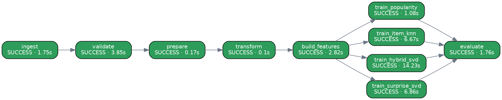

| Task | Stage | Status | Attempts | Seconds | Depends on | Result |
|---|---|---|---|---|---|---|
| ingest | Data Ingestion | success | 1 | 1.75 | — | {'users': 2010, 'items': 904, 'interactions': 64571} |
| validate | Data Validation | success | 1 | 3.85 | ingest | {'gate_passed': True, 'users_rejected': 18, 'items_rejected': 4, 'interactions_rejected': 5112} |
| prepare | Data Preparation | success | 1 | 0.17 | validate | {'users_age_imputed': 42, 'users_gender_filled': 8, 'users_country_filled': 20, 'items_title_filled' |
| transform | Data Transformation | success | 1 | 0.1 | prepare | {'train': 47213, 'val': 5902, 'test': 11804, 'matrix_density': 0.02633} |
| build_features | Feature Management | success | 1 | 2.82 | transform | {'feature_views': ['user_features', 'item_features'], 'materialized_as_of': '2025-10-12 17:14:3 |
| train_popularity | Model Training | success | 1 | 1.08 | build_features | {'model': 'popularity', 'run_id': '54002a5f189b4629963686b6d06e9ca9', 'params': {'mod |
| train_item_knn | Model Training | success | 1 | 6.67 | build_features | {'model': 'item_knn', 'run_id': '5cd85a7740814867b80c30be5c4cca5a', 'params': {'model |
| train_hybrid_svd | Model Training | success | 1 | 14.23 | build_features | {'model': 'hybrid_svd', 'run_id': 'b8cbfa53659e42f8b6ca44ce55533da9', 'params': {'mod |
| train_surprise_svd | Model Training | success | 1 | 6.86 | build_features | {'model': 'surprise_svd', 'run_id': '2feee5fe836845d3bb9e05cd86805be7', 'params': {'m |
| evaluate | Model Evaluation | success | 1 | 1.76 | train_popularity, train_item_knn, train_hybrid_svd, train_surprise_svd | {'best_ndcg_model': 'hybrid_svd', 'ndcg@10_popularity': 0.0497, 'ndcg@10_item_knn': 0.1438, 'nd |
06:48:25 src.orchestration | START ingest (attempt 1/2) 06:48:27 src.orchestration | SUCCESS ingest in 1.8s 06:48:27 src.orchestration | START validate (attempt 1/2) 06:48:30 src.orchestration | SUCCESS validate in 3.8s 06:48:30 src.orchestration | START prepare (attempt 1/2) 06:48:31 src.orchestration | SUCCESS prepare in 0.2s 06:48:31 src.orchestration | START transform (attempt 1/2) 06:48:31 src.orchestration | SUCCESS transform in 0.1s 06:48:31 src.orchestration | START build_features (attempt 1/2) 06:48:33 src.orchestration | SUCCESS build_features in 2.8s 06:48:33 src.orchestration | START train_hybrid_svd (attempt 1/2) 06:48:33 src.orchestration | START train_item_knn (attempt 1/2) 06:48:33 src.orchestration | START train_popularity (attempt 1/2) 06:48:35 src.orchestration | SUCCESS train_popularity in 1.1s 06:48:35 src.orchestration | START train_surprise_svd (attempt 1/2) 06:48:40 src.orchestration | SUCCESS train_item_knn in 6.7s 06:48:41 src.orchestration | SUCCESS train_surprise_svd in 6.9s 06:48:48 src.orchestration | SUCCESS train_hybrid_svd in 14.2s 06:48:48 src.orchestration | START evaluate (attempt 1/2) 06:48:49 src.orchestration | SUCCESS evaluate in 1.8s